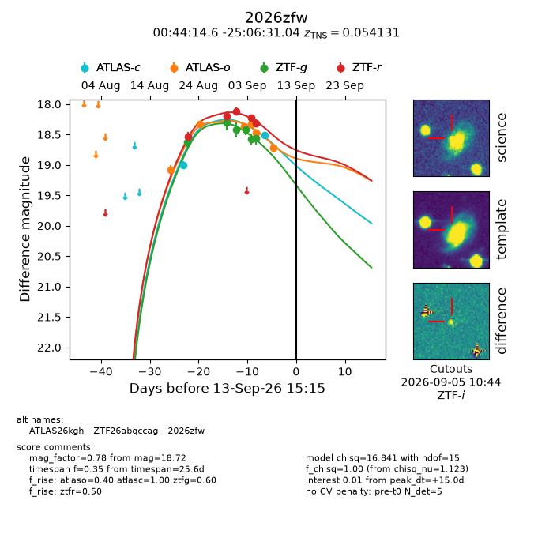
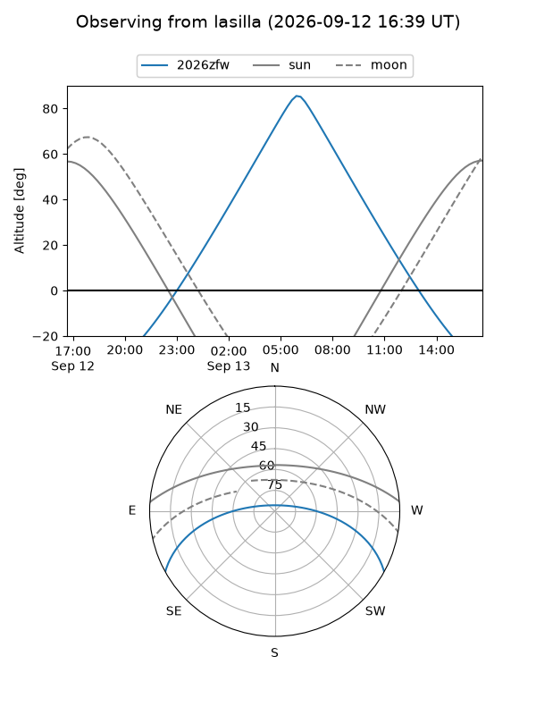
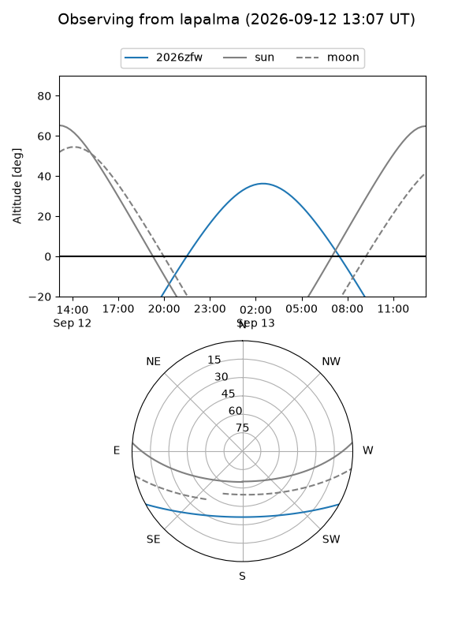
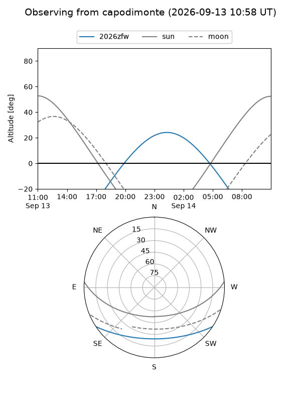
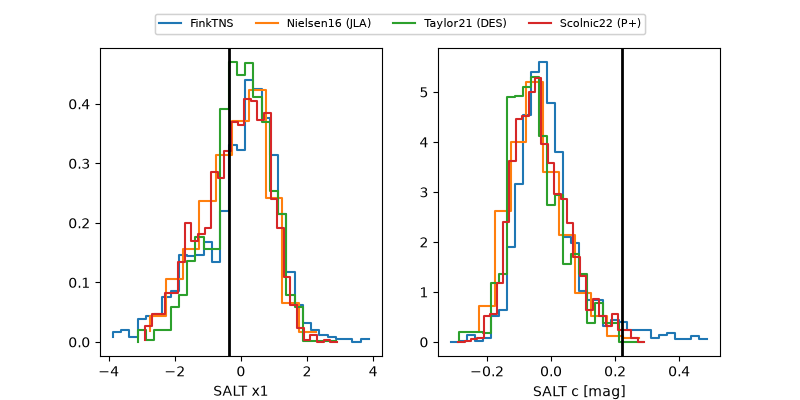

2026zfw
Target 2026zfw at 2026-09-13 15:17
Aliases and brokers:
FINK-ZTF: ztf.fink-portal.org/ZTF26abqccag
Lasair-ZTF: lasair-ztf.lsst.ac.uk/objects/ZTF26abqccag
ALeRCE-ZTF: alerce.online/object/ZTF26abqccag
YSE-PZ: ziggy.ucolick.org/yse/transient_detail/2026zfw
TNS name: wis-tns.org/object/2026zfw
Direct TNS query: direct search
alt names
ZTF26abqccag (ztf,fink_ztf)
2026zfw (tns,yse)
ATLAS26kgh (atlas)
Coordinates:
equatorial (ra, dec) = 11.0606,-25.10862
equatorial (HMS+DMS) = 00:44:14.55,-25:06:31.04
galactic (l, b) = (83.8819,-87.41405)
Flags:
TNS type: SN Ia
TNS redshift: 0.0541
peak dt: +15.0
Photometry:
last atlasc=18.51, atlaso=18.72, ztfg=18.56, ztfr=18.31
2 atlasc, 6 atlaso, 6 ztfg, 5 ztfr detections
Lightcurve

Visibility



Additional plots
